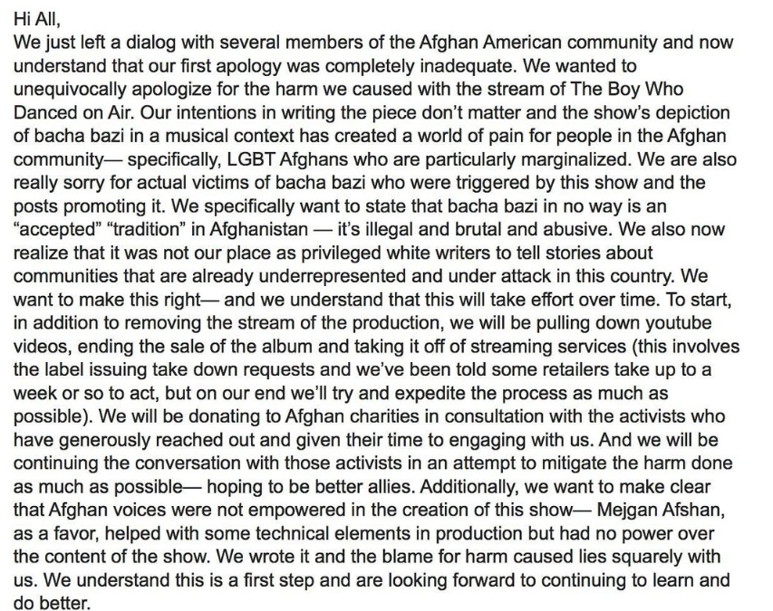
Apology by Charlie Sohne and Tim Rosser to the Afghan community following backlash on The Boy Who Danced on Air. Full post available on Instagram.
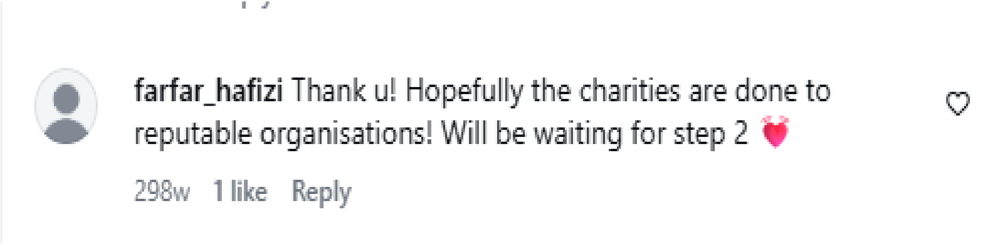
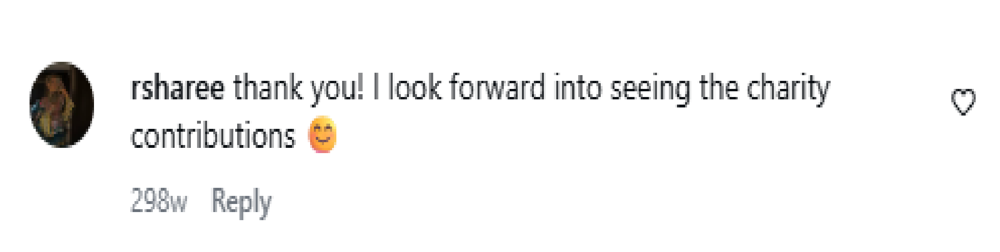
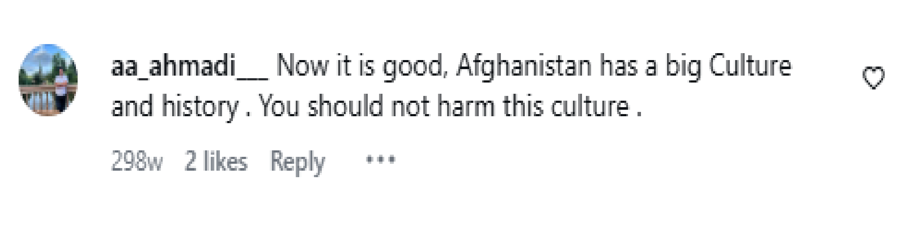
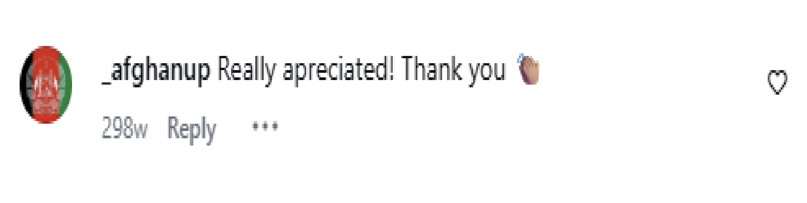
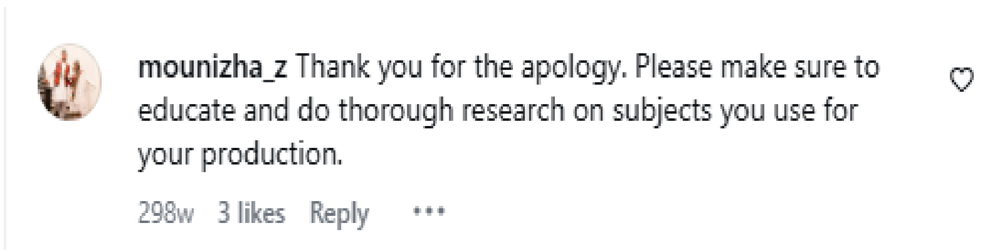
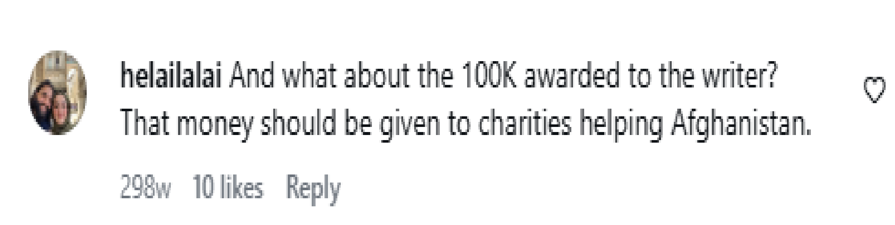
"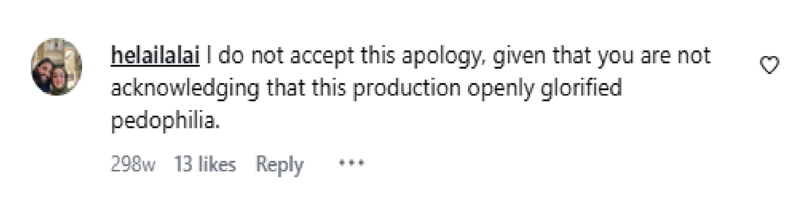
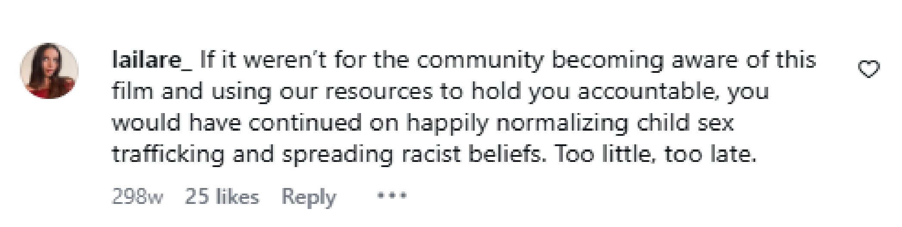
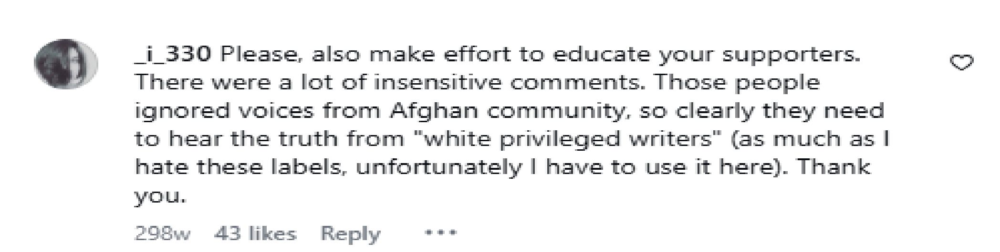
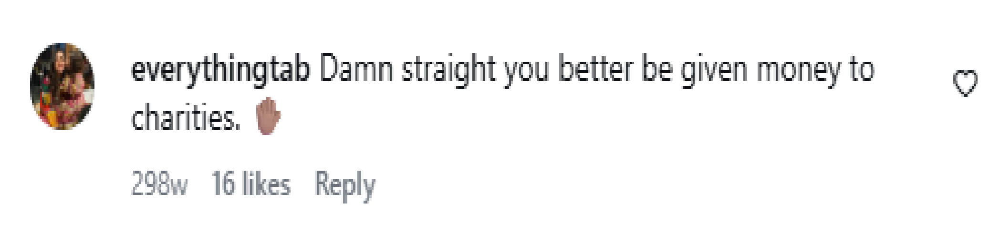
Introduction
In 2020, there was a whirlwind of backlash by the Afghan community on social media concerning a musical that twisted the community’s notion of right and wrong. The Boy Who Danced on Air (Sohne & Rosser, 2013) imagines two young boys who have fallen prey to a practice in Afghanistan called bacha bazi. Bacha bazi, literally translated as “boy play”, occurs when young boys, who are abducted or sold, are sexually abused by wealthier men and used as dancing boys at gatherings. The Afghan community had issue with the lack of Afghan input in the production of this musical because the two white writers, librettist Charlie Sohne and composer Tim Rosser, have no connection to the people they spoke for. The Boy Who Danced On Air was written on air: it is not grounded in Afghan culture, lived experiences, or language. Through ignorance the writers wrote a shallow narrative, which holds up a mirror to the West rather than Afghanistan itself and is therefore deeply orientalist. To support this thesis, my methodology will include a literary analysis of the term bacha bazi and its meanings in Farsi and the song “A Boy of My Own”, autoethnographic reflections of bacha bazi, and my memory of the 2020 social media activism against The Boy Who Danced on Air.
On Positionality: The Boy Who Danced on Air From an Afghan’s Perspective
As my essay at times covers the reception of the musical The Boy Who Danced on Air (Sohne & Rosser, 2013) from an autoethnographic and memory methodology, I'd like to note that I am a cisgender woman who does not identify as queer. I speak from my individual lens and cannot know about bacha bazi myself outside of what was taught to me by my family. However, as an Afghan Canadian with a familial history of lived experience in Afghanistan where fears of bacha bazi were real, my experience and conversations of bacha bazi and my family’s close proximity to bacha bazi geographically, historically, and societally may be a closer representation of it than the imaginings of two white writers who didn’t know it existed before watching one documentary.
In “Collaborative Untangling of Positionality, Ownership, and Answerability as White Researchers in Indigenous Spaces”, Catherine Bennett, Kate Fitzpatrick-Harnish, and Brent Talbot (2022) reflect on their identity as white scholars teaching music about and in indigenous spaces. They look at the issues of positionality and the potential harms it can cause by what realities researchers make visible and invisible. This thinking is grounded in Leigh Patel’s work Decolonizing Educational Research from Ownership to Answerability (2015). With more awareness of anti-colonial discourses, authorship about cultures not of an author’s own are being brought into scrutiny and Bennet et al. demonstrate through their article the reflexivity and research required to ensure oppressive practices are not being imposed on the cultures under study and therefore undermining the scholarly goal to benefit society.
The identity of the two white writers was a major issue which arose among the Afghan community during our 2020 backlash on The Boy Who Danced on Air (Sohne & Rosser, 2013). In an interview with Sohne and Rosser by the Abingdon Theatre Company the writers confessed their shallow research process on the practice of bacha bazi. Sohne enthusiastically reports during the interview that before having watched the PBS Frontline documentary “The Dancing Boys of Afghanistan” they knew “nothing about the practice” (Times Square Chronicle, 2017). Afterwards, Rosser confesses that they were hesitant to write the book “mostly because it was a practice, [they] knew nothing about” (Times Square Chronicle, 2017). Through this interview and the content of the musical, it seems the writers did little work when thinking about their own identity and positions of power as white male-presenting Westerners. They didn’t consider how a fiction would affect the Afghan community at large, and the aftermath of the musical led to the burden of educating the writers by the Afghan community themselves about why the fictional musical form retraumatized Afghans, particularly those who have been themselves survivors of bacha bazi.
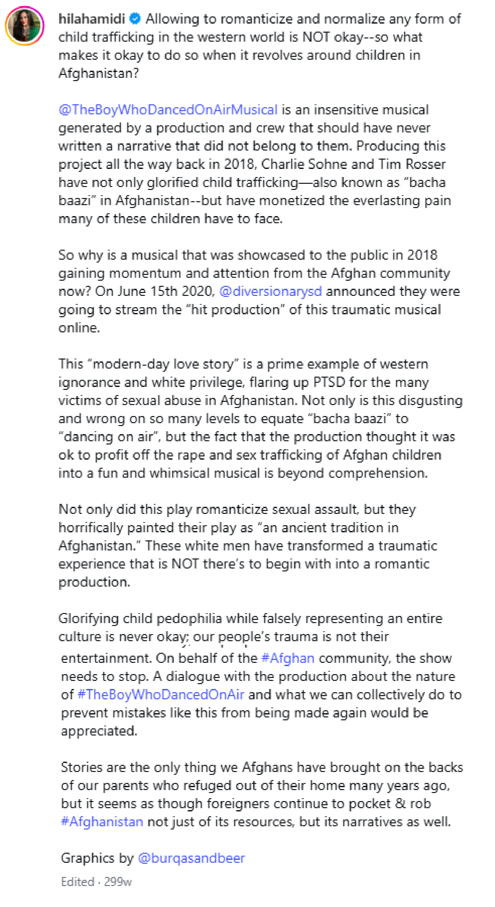
Caption by Afghan Activist Hila Hamidi bring awareness to The Boy Who Danced on Air. Full post available on Instagram.
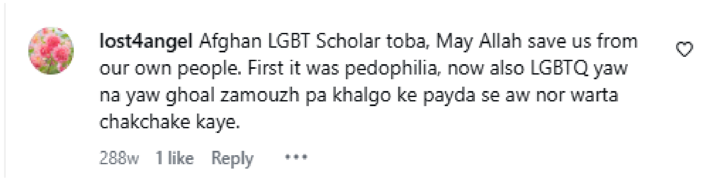
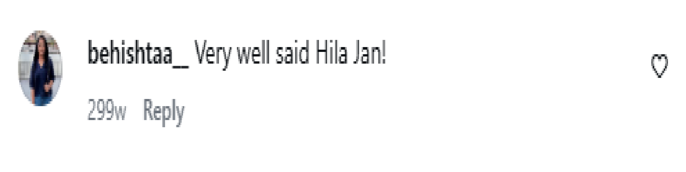
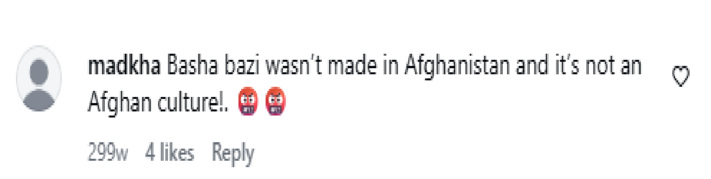
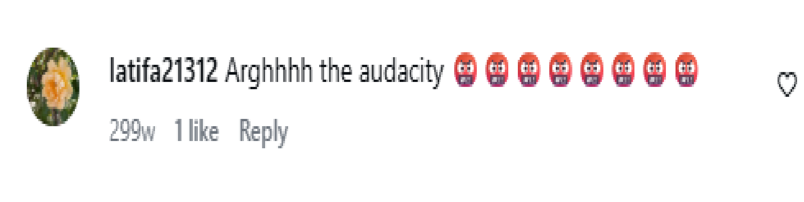
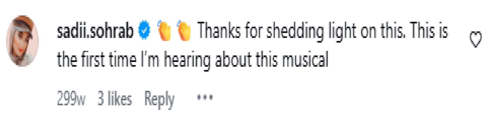
Charlie Sohne and Tim Rosser's interview with the Abingdon Theatre Company published in 2017. Full video available on YouTube.
Home(land)ophobia
Rosser’s and Sohne’s lens on bacha bazi is very counterintuitive to that in Afghanistan. For me bacha bazi was never framed positively so my reception of the musical was that of anger, as was for many others in the Afghan diaspora on social media. In 2020, in the midst of COVID-19 and Black Lives Matter activism I took on the cause against The Boy Who Danced on Air never having seen the musical. Growing up I would hear conversations among my elders about the ills which bacha bazi brought to the country. Once it was even told as a mystical curse of god on Afghanistan which led to the 1992 civil war and this echoed in the back of my mind as I tapped away on my phone keyboard. In 'Race and "Moral Panics” in Postwar Britain' Stuart Hall (2021) takes a historical look at the “moral panic” of indigenous Britons against immigrants after the second world war. The article interprets this social history from a Marxist cultural perspective and argues that the racism was unlike an innate universal racism but that it was contextual, and the racism of this context was unlike past racism but rather developed from within the society and its historical pressures.
Similarly, The Boy Who Danced on Air was in some ways cancelled as a result of the social upheaval of spring/summer 2020 as the musical itself was created before 2020 with productions dating back to 2013. However, the pressure of COVID-19 and the surge in Black Lives Matter activism on social media in the aftermath of the death of George Floyd may have spurred increased interaction with this cause on Instagram. So much so that the writers cancelled their production and issued an apology on their Instagram page @theboywhodancedonairmusical in 2020. From my memory, the organizer who brought awareness to the musical, Madina Wardak (@burqasandbeer on Instagram), stressed on an Instagram story that the backlash on the musical was not targeted towards the LGBTQ2IA+ community, but was instead grounded on a condemnation of pedophilia. I recall agreeing with Wardak, yet some comments disguised as ‘activism’ were tinged with homophobia.
Culturally, I have grown up with the perception that Afghans are homophobic, yet I challenged this universalizing cultural identity when reading Stuart Hall’s “Cultural Identity and Diaspora” (1994), where they argue that identity is not only shaped by others and the cultures we live in but also through our own subjective experience in a way that is imaginary. In their article evidence for the latter is provided by looking at the identity making of the people of the Caribbean as they try to reconnect with their forgotten African ancestry. In the process they “produce and reproduce themselves.”: “We should think, instead, of identity as a “production” which is never complete, always in process, and always constituted within not outside representation. This view problematizes the very authority and authenticity to which the term “cultural identity” lays claim.” (Hall, 1994, p.257) Growing up, conversations about bacha bazi subtly taught me as a child to hate those who identified as queer. Yet, in the process of growing up in Canada and understanding the rights of the LGBTQ2IA+ community outside the context of bacha bazi, one is not necessary for the other. Although on a very shallow level the song “A Boy of My Own” can be read as simply a love story between two ill-fated boys, the conflation of Afghan queer relationships and bacha bazi in The Boy Who Danced on Air further perpetuates Afghan homophobia by offering no alternative possibility of an Afghan queer romantic relationship outside of the practice. This was the worldview of my parents and grandparents who saw it as a reality in the society they lived in. Bacha bazi was a necessary precondition to queer Afghan relationships. Yet, this is a cultural identity and reality that many Afghans have reinterpreted and reproduced as a diaspora living outside of their parents’ homeland.
The Boy Who Danced on Orientalism
Edward Said, through his groundbreaking book Orientalism (1979), argues that the Western conception of the Orient is actually a fiction that holds a mirror to the West itself. Said supports his argument through a study of 18th and 19th century Western literature. In the context of postcolonial studies, Said’s theory points to the oppressive influence colonial appropriation and myth making have on colonized cultures, depicting the cultures not as they are but as the West is inclined to see them. Although the fiction of the Orient has some grounding in geographical and power structures, this fiction doesn’t correspond correctly to the people and cultures of the Orient (5-7).
Similarly, The Boy Who Danced on Air is a fictional representation of bacha bazi and carries a geographical dissonance: it is situated in the West and the writers couldn’t, and I assume wouldn’t, stage the musical in Afghanistan. It's literal location never has been in the country it represents. Although given the political climate, it may be unrealistic to set the musical in Afghanistan, the writers’ attempt to stage the musical with the simulacra of Afghanistan is very limited at times in their 2014 production. Given that the musical is set in rural Afghanistan would suggest Afghan styles of dancing. Yet in the 2014 production this isn’t the case (Bausilio). Although Afghan dancing is at times highly improvised and varies among individuals, the pirouettes and back flips of the 2014 production hardly resemble it. Similar to Said’s argument, The Boy Who Danced on Air is not Bacha Bazi as it actually exists but rather what the writers imagine it to be.
Nasser Al-Taee (2010)label> draws on Edward Said’s theory on orientalism and proposes to use this postcolonial lens on the field of musicology. They argue that this mode of analysis onto musicology has been rejected by their predecessors. “Orientalism in music” they write, “was self-evident representations of racial difference.” (xiii) Al-Taee argues that Said’s arguments of an imagined Orient mirrored on Western thinking is apparent in Western music from the eighteenth century to the present (xi).
In my analysis of The Boy Who Danced on Air’s (Sohne & Rosser, 2013) song “A Boy of my Own”, the writers hold up a western mirror in the backdrop of bacha bazi in Afghanistan. The song, sung by two boys (Paiman and Feda), normalizes the act of taking on a boy for the practice. Throughout the song the two boys describe a cycle of abuse but there is a dissonance with what they are describing and the accompanying music. The instrument used in the ensemble is that of the piano as opposed to a traditionally Afghan instrument such as a tar or dambura. The style of the song is child-like and invokes catharsis as content words associated with dancing boys move from “scare” (line 4, syllable 3) and “beat” (line 4, syllable 6) to “love” (line 54, syllable 3) and “security” (line 54, syllable 5-6). Yet the title of the song implies possession through the use of “my” and “own” and the speakers sing repeatedly about “having” (line 3, 9, 31, 38, 39, 40, 47, 62), which would point to a type of slavery. Without context, the piece would seem to be a love song between two shy boys, yet considering what they are representing, there is a disconnect between what the song implies in a real-life context and the effect the song is trying to invoke.
Nuaman's Story
“A mother and her twelve-year old son, Nuaman, were forced to leave their town after the death of Nuaman's father. During their journey, the mother accepted help from men who offered to retrieve a van for the two and drive them safely to their destination. Instead of transporting the two, Nuaman recalls that the men took him away from his mother and forced him into sexual servitude:
[T]hey kept me in a room for many days in [a place near Peshawar] where first they had sex with me by themselves for many days, and then they allowed everybody else to come and have sex with me for only 40-50 rupees. It was like I was an animal in the zoo, and people could see me and use me after paying the ticket fee. I was twelve and a half years old at that time. Within one month I think 20-30 men had sex with me and I was about to die of it.
The horror Nuaman describes disrupts the lives of potentially thousands of Afghan boys.”
Anthony Lee Medina as Paiman (left) and Giuseppe Bausilio as Feda (right) singing "A Boy of My Own" from Sohne and Rosser's 2013 production of A Boy Who Danced on Air. Full video available on YouTube.
Stealing Afghan Pain
Strangely, the writers didn't foresee the backlash by the Afghan community even years after this 2014 production. If they did, they may have known the feelings of fear the practice arouses. In my family, stories about bacha bazi were a cause of anxiety. Growing up my mother would often mention to me that her family wouldn’t let her youngest brother play outside of the house because of this fear. In Canada there seems to be more security with regards to child abduction, but with the corruption/negligence of law enforcement in Afghanistan my family didn’t feel safe enough to let my uncle out on his own. There was helplessness involved with the practice which the writers are not aware of as they have never lived with this fear of abduction. Feelings such as these are not considered in the song. Instead, the song conveys child slavery and abuse in a cute Disney-like style gas lighting Afghans who both experienced the pain of bacha bazi and those who lived with the fear of it.
In “Stealing the Pain of Others : Reflections on Canadian Humanitarian Responses”, Sherene Razack (2007) argues that in the process of consuming stories on humanitarian crises, such as the Rwandan genocide, our empathy turns back to the self and we thereby steal the pain of others. One example which Razack puts forward connected to slavery is philosopher John Rankin’s empathizing with a black slave. In the process of Rankin putting himself in the slave's shoes, he perpetuates the concept of slavery counterintuitive to his abolitionist philosophy. The slave’s body becomes a unit of exchange for Rankin’s humanity as Rankin occupies it to understand the slave’s position. Yet this same privilege is not afforded to the slave placing Rankin again in a place of power taking both the position of the master and slave (pp. 376-378). Rankin steals the pain of the slave through empathy by emoting for his own invoked predicament as opposed to the slave, thereby making the suffering about himself.
Sohne and Rosser engage in a similar theft: attempting to place themselves in the shoes of the victims of bacha bazi in order to write the musical. Yet they create a narrative which is more a reflection of themselves and their own culture than that from which the practice comes. Through spectacle, the dancers take part in a corporal empathizing, yet this spectacle becomes a reflection of themselves and their culture as opposed to the victims they represent on stage. In the 2014 production during instances where the actors dance, we are put in the perspective of the dancing parties which take place during bacha bazi, yet there is a difference between what takes place on this stage and what takes place in Afghanistan—one is a willed performance where the actors have agency and the other is slavery. It takes place in alternate geographies where the actors are of a higher socio-economic status and have the privilege of living in a developed Western country. The actors can leave the stage and make choices for how they want to conduct their lives, but victims of bacha bazi can’t. Another major difference in the spectacle is that the actors who play the dancing boys do so for compensation. This commodification by Rosser and Sohne supposed empathy was devoid of any actual material embodiment of the slaves they represented: according to Sodaba Haidare (2020) no Afghan actors were cast for the various showings of the musical, and therefore no survivors of bacha bazi could have been represented. The representation of dancing boys is shallow and doesn’t consider the gravity of the situation, while their pain is subverted into a childish love story.
Mirza's Story
The world blurred. Pain, sharp and searing, tore through me, a physical agony that eclipsed all thought, all fear, all greed. My body stiffened, then went limp, a broken puppet. The sounds of the forest, once a distant comfort, became a mocking symphony of chirps and rustles, indifferent to my suffering. When it was over, I lay there, naked, my trousers down around my knees. Each breath was a fresh stab of pain, and my entire being screamed in a silence that was more terrifying than any scream. The physical hurt was immense, but the emotional wound, the violation, felt deeper, a raw, gaping chasm in my soul. Ahmad Shah moved with an almost casual air.
Giuseppe Bausilio dancing for Sohne and Rosser's 2014 production of A Boy Who Danced on Air. Full video available on YouTube.
The song forwards what Jasbir Puar (2007) has termed "homonationalism". By subverting bacha bazi as Afghans conceive it, the writers whitewash the reality of the practice as they conceive of it. Yet their ideology stems from homonormativity while at the same time oppressing ‘other’ bodies—these bodies being the victims of bacha bazi and Afghans who grew up in Afghanistan. Although the oppression which Puar addresses with homonationalism is the endurance of physical pain, the psychological pain which The Boy Who Danced on Air induces is also oppressive.
Bacha bazi: Deception or Amusement?
Linguistically, the term bacha bazi carries various meaning in Farsi given different contexts. John Baily in “Wah wah! Meida Meida! The changing roles of dance in Afghan society” (2013) takes a survey of dance in Afghanistan, especially through the observations of dance in the city of Herat. The section on dancing boys discusses the details of bacha bazi and includes a philological analysis of the term, translating bacha bazi simply as “boy” and “play” (108). However, it doesn’t consider the negative connotations associated with the word bazi and it’s association with sex and sexual relationships in the Afghan culture.
The term bacha bazi and bacha baz have much different meanings than those now associated with “gay”, “lesbian”, and “queer”. To start the very use of the word bacha refers to someone underage or below the prospect of marriage. Because consummation is not considered outside of marriage in Islam, a religion the majority of Afghan's follow, there is a connection between virginity and this term. Within Afghan culture the referents bacha (boy) and dokhtar (girl) are tied to virginity: it is only after consummation through marriage that individuals would be called by the adult referents mard (man) and zan (woman). Although this rule is not always followed, it is generally the case as I have observed it. However, the term mard baz isn’t commonly used within the vocabulary of Afghan Farsi dialects, pointing to the fact that this issue in the minds of Afghans relates to childhood.
Conversely, in the West there is not always as clear a delineation of when one passes from boyhood to manhood. Yet, the song “A Boy of My Own” portrays a desire for manhood through its projection into the future. The use of simile by Feda when expressing his desire for Paiman as his dancing boy (“When I have a boy of my own/ All his steps will be quiet and subtle/ Like yours” (line 31-33)) would suggest that this projected boy is actually Paiman. Yet this notion of manhood is Western. It has to do with expressing your love for someone outside the prospect of marriage. Culturally, this is not the norm as it is practiced in many social circles within Afghanistan even to the present day. Although different for the diaspora, suitorship is the practice of courting through khastegari in Afghanistan. The play appropriates the idea of bacha bazi as the larger framework of the story, but the underlying cultural norms of the story are deeply western.
Further, although the term bacha bazi can be literally translated as “boy play”, the word bazi has multiple meaning in Farsi and these meanings change the way the term is viewed. Baz can mean “player” while bazi can mean “playing”. This can have innocent associations such as in the context of talking to a child and asking them "bazi makuni?”, a rhetorical question showing affection asking if they are playing. However, baz and bazi can also mean “trickster” and “to trick”. In the use of the term “zanaka baz” it would be best translated to the U.S. slang term for “player” synonymized in the OED with “playboy” and having a similar meaning in Farsi. In terms of my own reception as an Afghan, bacha bazi and bacha baz often conjure the negative meaning associated with trickery as opposed to the innocent ones of playing. Therefore, bacha bazi translated literally as “boy play” is somewhat ignorant of associations of the word for Afghans. Without understanding these multiple meanings, the Writers attempt to bring a queer story of two Afghan boys liberated by bacha bazi, yet they are deceived by a simple translation.
Bachagak Hai Gharbi: The Case of Westerners
Looking at the Arab and Muslim world through a postcolonial lens, Joseph Massad makes a case that within modern and contemporary western historiography of the Arab world there was backlash on Arab gay love and sexual desire (2007, p.1). In chapter 3 of the book, Massad looks at the development of the vocabulary of the gay rights movement working to universalize gay rights through the International Lesbian and Gay Human Rights Commission (IGLHRC). The Muslim world is one target of what Massad terms “the Gay International”, which aimed to “liberate” Arab and Muslim “gays and lesbians” from oppression in their homes (p. 162). Massad argues against this categorical assimilation and discourse surrounding the Arab and Muslim world which imposes “homosexual” and “gay” identity as opposed to simply “practitioners of same-sex contact”. Massad provides Rex Wockner’s article from 1992 as an example which covers gay and lesbian men and women in the Arab world and Iran. In it Wockner muses on the identity of men who practice “both same-sex and different-sex contact” which creates a question for instability (164). In this way, the Gay International of Massad imposes orientalist imaginings of homosexuality onto Arab and Muslim communities despite their alternate identification or categorization as has been developed culturally and linguistically. Themes of orientalism and homonationalism both arise in Massad’s text. His analysis of queer identity in the East raises issues of the Western imperial framing of sexuality onto Afghans. However, identity in the context of bacha bazi and by the bacha baz are framed quite differently by Afghans, which raises issues in The Boy Who Danced on Air’s representation of the society.
Looking at the Arab and Muslim world through a postcolonial lens, Joseph Massad makes a case that within modern and contemporary western historiography of the Arab world there was backlash on Arab gay love and sexual desire (2007, p.1). In chapter 3 of the book, Massad looks at the development of the vocabulary of the gay rights movement working to universalize gay rights through the International Lesbian and Gay Human Rights Commission (IGLHRC). The Muslim world is one target of what Massad terms “the Gay International”, which aimed to “liberate” Arab and Muslim “gays and lesbians” from oppression in their homes (p. 162). Massad argues against this categorical assimilation and discourse surrounding the Arab and Muslim world which imposes “homosexual” and “gay” identity as opposed to simply “practitioners of same-sex contact”. Massad provides Rex Wockner’s article from 1992 as an example which covers gay and lesbian men and women in the Arab world and Iran. In it Wockner muses on the identity of men who practice “both same-sex and different-sex contact” which creates a question for instability (164). In this way, the Gay International of Massad imposes orientalist imaginings of homosexuality onto Arab and Muslim communities despite their alternate identification or categorization as has been developed culturally and linguistically. Themes of orientalism and homonationalism both arise in Massad’s text. His analysis of queer identity in the East raises issues of the Western imperial framing of sexuality onto Afghans. However, identity in the context of bacha bazi and by the bacha baz are framed quite differently by Afghans, which raises issues in The Boy Who Danced on Air’s representation of the society.
Further, as Amalendu Misra highlights “what is too often missed in Western analysis is that individual sex acts or behaviors do not necessarily define one’s sexual orientation in Afghanistan." (2023 p. 360) Homosexuality and homosexual acts are not always congruent within bacha bazi. Abusers take on bachas or victims for power dynamics, unlike the love story imagined by Sohne and Rosser. This highlights the disparity in how individuals identify across geographies.
We Didn't Ask: A Semantic Shift of Bacha Bazi?
In The Regulation of Desire Gary Kinsman traces the development of categories of “lesbian and homosexual” placing them at shifts in “class and social organization” (1989, p. 23). They look at sexual regulation in Canada through a “historical materialist view of sexual relations” (1989, p. 24) and bring a sociological view of sexuality arguing that “sexuality is a history of social relations.” For example, Kinsman gives the category of “Mollies” at the beginning of the eighteen century as an example, which was used by subcultures and diverged from the biblical language of “sodomite” (1989, p. 40). Another example is the categorization of “deviant” among psychiatrists and psychologists (1989, p. 28). In the West it was in the 1890s that the term homosexual “arose in the context of a lived reality of same-gender sexual networks” (1989, p. 48). All of these were Western developments.
Afghan queers do not have this same history or vocabulary to describe their experiences in a way that is accepted among the wider Afghan community. Terms for homosexuality and homosexual relations are often derogatory or used as insults among Afghans. Hamjens-baz, a close translation for homosexual, although more formal carries again with it the baz ending associated with trickery. In creating a musical which was ignorant of the associated meanings of the word bacha bazi the librettists are ignorant of a divergent history.
Ali's Story
At school, I was distracted. The books turned to pages I couldn't open, as memories clutched their hands to my chest. I started avoiding the few who still cared. Small joys—a soccer game, a joke in the yard—felt distant, like sunlight behind glass. I started a silence with myself that was heavier than my body. Sometimes the images would come late at night and my eyes would burn as if there was nothing but salt and regret to open them. I'd press my hand against my ribs and breathe softly, counting until fear loosened its grip. I learned not to be able to read as others learn to read: in practice, by necessity. This is my truth. Then, I didn't tell him. I tell you now, and even as I write, my hands tremble at the memory. I know there is nothing special in my story, I am just another victim of being raped but why am I writing today after years of suffering? Will this be any good? Will this help? I don’t know. I am writing because I know the power of speaking up not just the voice but the secrets. If I could have I would have said this in my own voice but all I have is these lifeless straight and curved lines on my screen. I don’t know if they will speak for me and my suffering.
In “A Boy of My Own”, Feda and Paiman's desire of a boy and them expressing this desire for one another would classify them through the noun bacha baz as opposed to the victims of bacha bazi. In this way the writers attempt to create the same semantic shift in meaning which occurred with the word “queer” in the West. By framing the bacha baz as two young boys in love with a song that is blind to the associated abuse and slavery, they conceive of an alternate imagining of who bacha baz are. Yet, Gary Kinsman (1989) traces the development of new vocabulary for the queer community with social change. This social change oftentimes came from within the queer community as is the example of the term homosexual and K.M. Benkert (p. 48). Yet there is a stress on community to instigate the change. It would seem a naïve move on the part of the writers to try to reclaim a term which they do not own culturally and without consultation of the community it stems from when thety didn't ask. In Kinsman’s example social change caused semantic shift in language, but Sohne and Rosser attempt to conceive of this social change without consultation with the community and through their own lens.
Conclusion
The disconnect of the writers' from the language and people of Afghanistan, and therefore their culture, was a direct result of their ignorance of the Afghan community. Although the Afghan community fought back with Sohne and Rosser’s orientalist representation, it speaks to a wider issue of Queer Afghans among the diaspora and at home who often become sandwiched with the practice of bacha bazi and its conflation of queerness and pedophilia. Sundering the two in the minds of Afghans may lead to a more liberating narrative than the slapstick portrayal in The Boy Who Danced on Air.
In entering this conversation about bacha bazi, I am not only in conversation with Sohne and Rosser but also the whole Afghan community and with the broader Western audience of the musical. Bacha Bazi is a particular issue because of its prevalence in the context of Afghanistan. However, pedophilia has affected all corners of the globe transhistorically, with one example documented in some versions of the western mythology of Ganymede. At the same time, within the field of gender and sexuality studies and postcolonial studies the issues covered in this essay not only pertain to bacha bazi but an incongruence of gender and sexuality across geography revealed in Sohne and Rosser’s appropriation, despite their attempt at the opposite.
Looking into future research into bacha bazi and its victims, it would be important to incorporate research from scholars with survivor positionalities. Their reception and thoughts on the musical may offer an insider’s voice within the literature that resists harmful representations of their lived experience.
This web text includes content about sexual abuse that may be triggering to some audiences.
Please Take Care